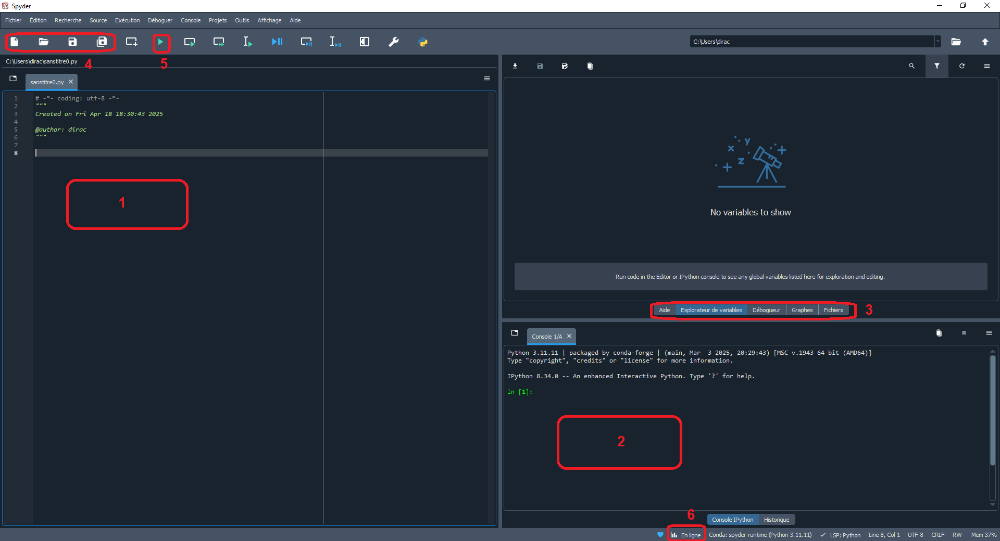

1. Environnement de développement
Nous allons utiliser l'environnement de développement Spyder. Il est destiné aux scientifiques. Il est libre, multiplateforme et intègre de nombreuses bibliothèques utiles d'usage scientifique pour programmer dans le cadre de la physique-chimie au lycée.
Lien de téléchargement : Spyder
1.1 Que contient l'interface de Spyder ?
L'interface de Spyder contient :

- une zone de saisie du code où chaque ligne est numérotée.
- une console python interactive où s'affiche les résultats mais aussi les messages d'erreurs.
- une série d'onglets comme l'explorateur de fichiers, l'explorateur de variables, la visualisation des graphiques, ...
- des icônes dans la barre de menu pour créer, ouvrir et sauvegarder des fichiers.
- une icône pour exécuter un script.
- une icône pour basculer entre un affichage graphique dans Spyder ou un affichage graphique dans une fenêtre extérieure interactive.
Test 1.1 : Interface
- Aprés avoir installé la dernière version de Spyder, démarrer le logiciel.
- Identifier les différentes zones de l'interface afin de se repérer.
1.2 Comment apparaît un script dans cet interface ?
Test 1.2.1 : Script
- Télécharger le script suivant : Suivi_pH_metrique
- Ouvrir le script avec Spyder et l'exécuter.
- Observer le code, la console python, les graphiques et les variables créées.
Que remarque-t-on ?
- Il y a des lignes d'instructions avec une syntaxe coloré par défaut. Ceci met en évidence les mots-clés du language, les données, ... Il faut bien comprendre que Python exécute normalement les instructions de la première ligne à la dernière ligne. L'ordre dans lequel ces instructions sont écrites à l'intérieur du programme est donc extrêmement important et c'est cela qui va définir notre algorithme.
- Il y a des sauts de ligne (ligne 8, 13, ...). Ces sauts permettent d'aérer le code et de le rendre plus lisible.
- Il y a des lignes avec du texte qui est précédé d'un
#. Ce sont des commentaires. Tout ce qui est écrit après le caractère#est ignoré par Python jusqu'à la fin de la ligne. Les commentaires sont facultatifs mais fortement recommandés afin de bien expliquer le code. - Il y a tout en haut du script un bloc de texte entouré de triples guillemets
""". Ce sont des docstrings c'est à dire des blocs de chaînes de commentaires pour documenter le code et exploitables par Python pour générer de la documentation. - Il y a des lignes d'instructions qui se terminent par
:et sont suivis de blocs d'instructions décalés : ce décalage s'appelle l'indentation. L'indentation représente un ou plusieurs espaces au début d'une ligne de code.
Important !
L'indentation fait partie intégrante de la syntaxe de python car elle sert à définir des blocs d'instructions. Un code mal indenté affichera systèmatiquement une erreur. Pour éviter ces erreurs, utiliser la touche Tab du clavier.
- Dans la console python, un résultat est affiché :
Vbe= 13.4 mL. - Dans l'onglet Graphes, il y a deux graphiques qu'on peut zoomer et enregistrer en tant que fichier image.
- Dans l'onglet Explorateur de variables, nous avons toutes les variables créées suite à l'exécution du script.
Test 1.2.2 : Script
Dans le script précédent,
- Ajouter des commentaires et exécuter le script.
- Sur une des lignes, supprimer une indentation et exécuter le script. Un message d'erreur va bien sûr se produire. Remettre alors l'indentation et exécuter à nouveau le script.
- Basculer l'affichage des graphiques en fenêtre interactive en cliquant sur l'icone (6) et exécuter à nouveau le script.
- Identifier quelques variables dans l'explorateur de variables.
Ce qu'il faut savoir faire avant de continuer :
- Ouvrir et sauvegarder un script avec Spyder
- Exécuter un script avec Spyder
- Reconnaître et réaliser une indentation
- Reconnaître et écrire un commentaire
- Basculer l'affichage graphique en mode fenêtre interactive
- Explorer des variables
Citation d'Albert Einstein
"La connaissance s'acquiert par l'expérience, tout le reste n'est que de l'information."